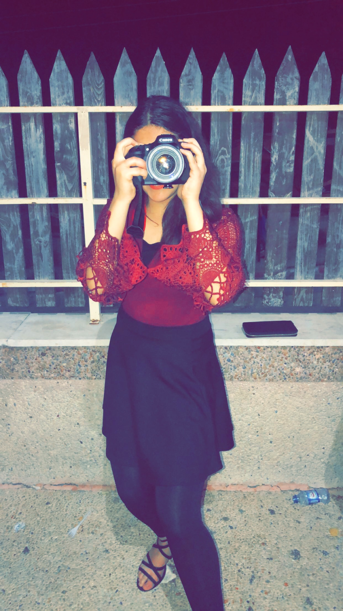

My name is Hiba Kader, I am a sophomore student at Madison Academic with all honors classes. I was born and raised in Jackson, Tennessee.
I am originally from the country Palestine. I am a bilingual, meaning I can speak 2 languages. Something a little different about me is that I enjoy learning another language, and a fun fact about me is that I can say my alphabet backwards quickly.
I have a passion for photography, in my free time I enjoy taking photographs of nature and other things. Also, I know how to knit, in middle school for art class I would sometimes have to knit things for a grade.
I enjoy running, I was on the track team freshman year. Finally, I was on the school debate team for Speech II and competed in a tournament against other districts and I was a specialist in Dev catalyst for creating a website.